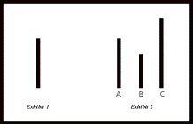

The Asch Situation
•
Set:
Matching lines;
6-8 other “judges”;
2/3 “critical trials”;
•
Variations:
–
Writing down answers
–
One dissenter (whether right or wrong!)
–
Asch: Group size 1 < 2 < 3 ≈ 4 and above
Recent research: monotonously linear
